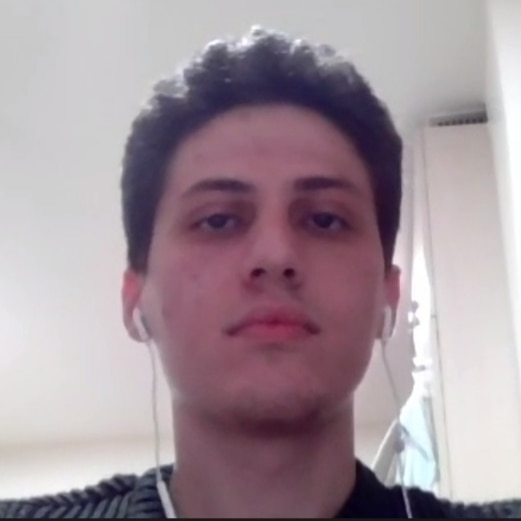
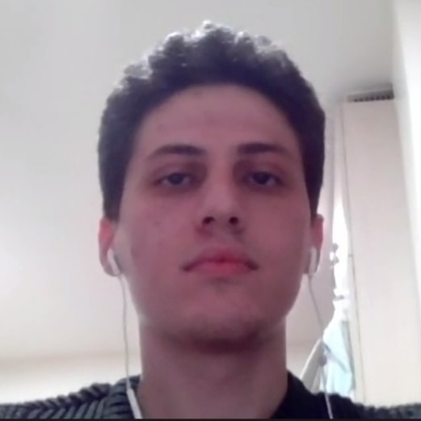

Course Information
About
This course gives a solid understanding of the principles and abstractions used in computer systems and machine programs using C. Towards this aim, it covers a broad range of topics, providing students with an in-depth perspective and programming experience regarding the basic topics of C language and how programs are formed and executed at the microprocessor-level.
Upon the completion of COMP201, student will be able to (1) demonstrate proficiency in writing C programs that require effective memory management, (2) gain a deep knowledge of the compilation flow and runtime behavior of C programs, (3) have a clear understanding of computer arithmetic in a modern computing system, (4) recognize the relationship between a C program and its assembly translation, and (5) gain a general sense of working in a Unix environment as a power user, getting familiar with shell tools, version control systems, compilers, debuggers, profilers.
The course is taught by Aykut Erdem, Mert Cokelek, Samet Demir, Nafiseh Jabbari Tofighi, Pinar Erbil, Doga Ege Inhanli, Irem Karaca, Omer Faruk Tal, and Ahmet Uyar.


 


Time and Location
Lectures: Monday, Wednesday at 10:00-11:10 (SOS B07)
Labs: Friday at 16:00-17:40 (Lab A), 12:00-13:40 (Lab B) (ENG B19)
Office Hours Tuesday 11:00-12:00 (Aykut)
Reference Books
- Randal E. Bryant and David R. O’Hallaron, Computer Systems: A Programmer’s Perspective, Third Edition, Pearson, 2016
- The C Programming Language, Kernighan and Ritchie
- Nick Parlante, Essential C, Stanford CS Library, 2003
- Nick Parlante, Julie Zelenski and others, Unix Programming Tools, Stanford CS Library, 2001
- Anish Athalye, Jon Gjengset and Jose Javier Gonzalez Ortiz, The Missing Semester of Your CS Education, MIT, 2020
Policies: All work on assignments must be done individually unless stated otherwise. You are encouraged to discuss with your classmates about the given assignments, but these discussions should be carried out in an abstract way. That is, discussions related to a particular solution to a specific problem (either in actual code or in the pseudocode) will not be tolerated.
In short, turning in someone else’s work, in whole or in part, as your own will be considered as a violation of academic integrity. Please note that the former condition also holds for the material found on the web as everything on the web has been written by someone else.
Communication
The course webpage will be updated regularly throughout the semester with lecture notes, presentations, assignments and important deadlines. All other course related communications will be carried out through Blackboard.
Pre-requisites
COMP201 is open to second-year undergraduate students. Non-COMP students should ask the course instructor for approval before the add/drop period. The prerequisites for this course is COMP 132 - Advanced Programming.
Course Requirements and Grading
Grading will be based on
- 10 labs (your lowest 2 scores dropped, no make-up) (24%),
- 6 programming assignments (32%) (Assignment0 3%, the others 6% each),
- Midterm exam (21%), and
- Final exam (22%)
Schedule
| Date | Topic | Notes |
| Feb 14 | Introduction. Course logistics, A tour of C programs (slides) (video spring'21) (video spring'21) (code) | B&O 1 Additional Reading: The Strange Birth and Long Life of Unix, Warren Toomey, IEEE Spectrum, 28 Nov 2011 “A damn stupid thing to do”—the origins of C, Arstechnica |
| Feb 16 | Bits and Bytes, Representing and Operating on Integers (slides) (video spring'22) (video spring'21) (code) Assg0 out: Getting Started with Unix and C |
B&O 2.2-2.3 Additional Readings:
|
| Feb 18 | Bootcamp: Programming with C and Git basics (slides) (video) | |
| Feb 21 | Bits and Bitwise Operators (slides) (video spring'22) (video spring'21) (code) | B&O 2.1 |
| Feb 23 | Floating point (slides) (video spring'22) (video spring'21) (code) Assg0 in, Assg1 out: Manipulating Bits |
B&O 2.4 Additional Reading: What Every Computer Scientist Should Know About Floating-Point Arithmetic, David Goldberg, ACM Computing Surveys, 23(1), 1991 Demos: |
| Feb 25 | Lab 1: The Linux Shell (slides) | MIT MS The Shell Stanford CS107 Unix videos 1-15, 24, 25 |
| Feb 28 | Chars and Strings in C (slides) (video spring'22) (video spring'21) (code) | K&R 1.9, 5.5, Appx B3 |
| Mar 2 | More Strings, Pointers (slides) (video spring'21) (code) | K&R 1.6, 5.5, Essential C 3 (strings and string.h library functions, The mechanics of pointers and arrays) |
| Mar 4 | Lab 2: Bits, Ints and Floats, Vim | MIT MS Editors (Vim) Stanford CS107 Unix videos 28 |
| Mar 7 | Arrays and Pointers (code) | K&R 5.2-5.5, Essential C 6 (Advanced pointers) |
| Mar 9 | The Stack and The Heap Assg1 in, Assg2 out: Strings in C |
K&R 5.6-5.9, Essential C 6 (The heap) |
| Mar 11 | Lab 3: C-Strings and Valgrind | Stanford CS107 Unix videos 26 |
| Mar 14 | Realloc, Memory Bugs (code) | K&R 5.6-5.9, Essential C 6 (The Heap) |
| Mar 16 | void *, Generics (code) | K&R 5.6-5.9, Essential C 6 (The Heap) |
| Mar 18 | Lab 4: Arrays/Pointers and GDB | Stanford CS107 Unix videos 27 Harvard CS50 short on GDB |
| Mar 21 | Function Pointers (code) | K&R 5.11 |
| Mar 23 | const, Structures (code) Assg2 in, Assg3 out: Heap Management |
K&R 6.1-6.7 |
| Mar 25 | Lab 5: Structs | Stanford CS107 Unix videos 27 Harvard CS50 short on GDB |
| Mar 28 | Compiling C programs (code) | Stanford Unix Programming Tools 1 |
| Mar 30 | Introduction to x86-64, Data Movement (code) | B&O 3.1-3.4 Additional reading:
|
| Apr 1 | Lab 6: Working with multiple files, writing your own Makefiles | |
| Apr 4 | Arithmetic and Logic Operations | B&O 3.5-3.6 |
| Apr 6 | x86-64 Control Flow Assg3 in, Assg4 out: Defusing a Binary Bomb |
B&O 3.6.1-3.6.2 |
| Apr 8 | Lab 7: Machine Programming with Assembly | |
| Apr 11 | No class - Spring break | |
| Apr 13 | No class - Spring break | |
| Apr 15 | No lab this week - Winter break | |
| Apr 18 | More Control Flow (slides) (video fall'21) (video spring'21) | B&O 3.6.3-3.6.8 |
| Apr 20 | x86-64 Procedures (slides) (video fall'21) (video) (code) | B&O 3.7 |
| Apr 22 | No labs this week | |
| TBA | Midterm Exam | |
| Apr 25 | Data and Stack Frames | B&O 3.8-3.9 |
| Apr 27 | Security Vulnerabilities (code) Assg4 in, Assg5 out: Buffer Overflow Attacks |
B&O 3.10 Additional Reading: Smashing the Stack for Fun and Profit, Aleph One |
| Apr 29 | Lab 8: Runtime Stack | |
| May 2 | No class - Ramadan holiday | |
| May 4 | No class - Ramadan holiday | |
| May 6 | No lab this week | |
| May 9 | The Memory Hierarchy | B&O 6.1-6.3 |
| May 11 | Cache Memories (slides) | B&O 6.4-6.7 Demos: Cache Simulator |
| May 13 | No labs this week | |
| May 16 | More Cache Memories | B&O 6.4-6.7 |
| May 18 | Optimization (code) Assg5 in, Assg6 out: Understanding Cache Memories |
B&O 5 |
| May 20 | Lab 9: Memory organization | |
| May 23 | Linking | B&O 7 |
| May 25 | Managing The Heap | B&O 9.9 |
| May 27 | Lab 10: Code Optimization | |
| TBA | Final Exam |
Resources
- Docker container for a development environment in COMP201
- Stanford CS107 Reader
- COMP201 Coding Style Guide for C Programming
- Guide on using LinuxPool
- UNIX Tutorial for Beginners
- Unix/Linux Command Reference
- Vi/Vim Cheat Sheet
- Harvard CS61 GIT Guide
- Stanford CS107 Valgrind Guide
- Brown CSCI0330 gdb Cheatsheet
- Stanford CS107 Guide to Make
- Stanford CS107 Guide to x86-64
- CMU 15-213 x86-64 Machine-Level Programming
- Stanford CS107 x86-64 Reference Sheet
{kind=link}